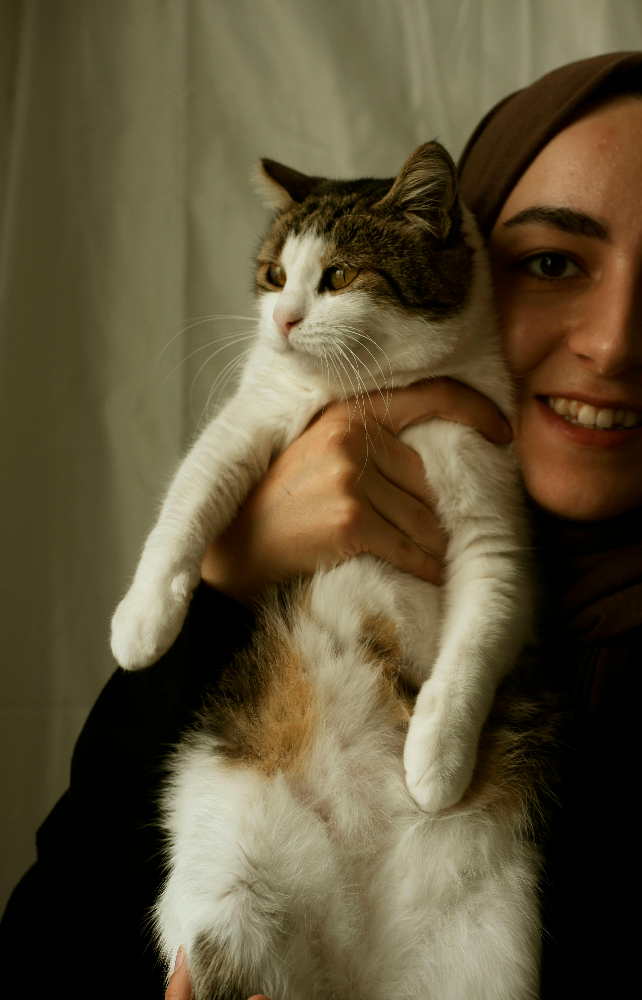
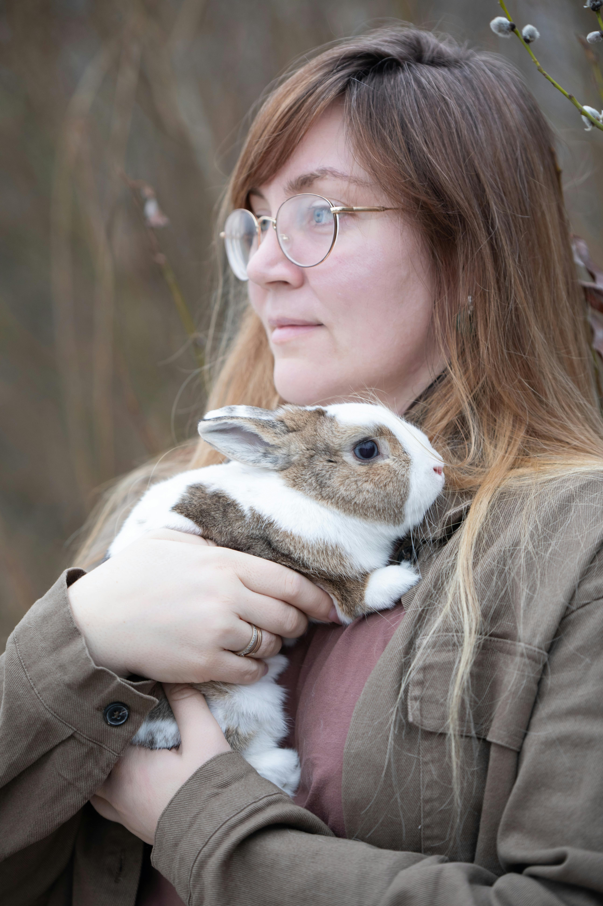

Successful Adoptions
Clara and Max
Pet adoption is the process of transferring responsibility for a pet that was previously owned by another party. Common sources for adoptable pets are animal shelters, rescue groups, or other pet owners. Some organizations give adopters ownership of the pet, while others use a guardianship model wherein the organization retains some control over the animal's future use or care. Online pet adoption sites have databases, searchable by the public, of pets being housed by thousands of animal shelters and rescue groups. To help lower the number of animals euthanized each year, some shelters have developed a no-kill policy. Best Friends Animal Society is the largest no-kill shelter in the United States who adopts policies such as "Save Them All".[4] This shelter and many others strive to keep their animals as long as it takes to find them new homes. City shelters and government-funded shelters rarely have this policy because of the large number of animals they receive.[citation needed]
Click here to learn more!Anna and Penelope
Animals are placed up for adoption for numerous reasons like being abandoned, lost, or rehomed from their current family. The need for rehoming sometimes results from allergies, death of a pet-owner, divorce, the birth of a baby, or relocation. Additionally, adoption mayweather, and traffic and enter adoption shelters in need of medical attention before entering the adoption process. After medical examinations, treatments, and behavioral tests, adoption centers (at their discretion) determine if the pet is healthy enough for adoption.[1] Physical appearance, behavior, and health of the dog play crucial roles in the pet adoption decision-making process, with many adopters prioritizing appearance over health. Social influences, such as breed popularity trends, and demographic factors, including household size and the presence of children, significantly affect the likelihood of dog ownership. Additionally, prior experience with dogs is a strong predictor of future dog adoption. Understanding these factors can help develop strategies to encourage responsible adoption practices and reduce the rates of dog relinquishment to shelters
Click here to learn more!Harry and Rocky
Homes cannot always be found, however, and euthanasia is often used for the excess animals to make room for newer pets unless the organization has a no-kill policy. The Humane Society of the United States estimates that 2.4 million healthy, adoptable cats and dogs are euthanized each year in the US because of a lack of homes.[3] Animal protection advocates campaign for adoption instead of buying animals in order to reduce the number of animals who have to be euthanized. Many shelters and animal rescues encourage the education of spaying or neutering a pet in order to reduce the number of animals euthanized in shelters and to help control the pet population.
Click here to learn more!2020-2024 Adoption Report
| 2019 | 2020 | 2021 | 2022 | 2023 | 2024 | |
|---|---|---|---|---|---|---|
| Animals Rescued | 15 | 10 | 23 | 32 | 27 | 14 |
| Animals Surrendered | 5 | 33 | 12 | 18 | 26 | 27 |
| Animals Adopted | 18 | 37 | 28 | 25 | 44 | 40 |
| Animals Returned | 1 | 3 | 2 | 5 | 1 | 0 |
| Animals Euthanised | 0 | 0 | 0 | 0 | 0 | 0 |